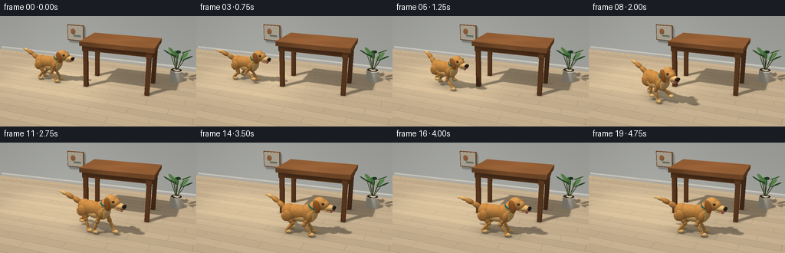
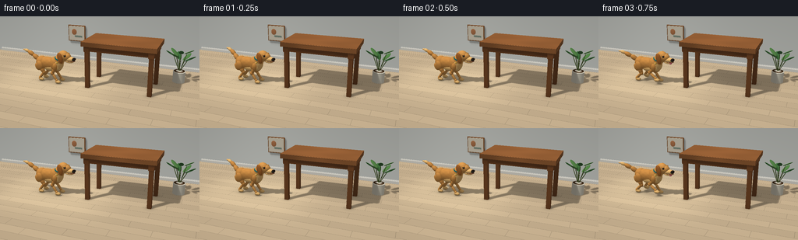

CODING AGENTS AS PIXEL WORLD MODELS
traex/GPT-6-Astra · dynamic_spatial_relationship_0000
点击播放 · 原生 RGB 像素
逐轮保存的候选
回放视频、检查图与代码变化。
每份候选均可单独播放。实际图片检查记录在下方工具轨迹中。
候选 01播放与检查图
点击播放 · 原生 RGB 像素


展开代码变化
--- 上一保存版本
+++ 本次保存版本
@@ -0,0 +1,433 @@
+"""Procedural, from-text RGB animation; only numpy/Pillow geometry and lighting."""
+import math
+import json
+from pathlib import Path
+import numpy as np
+from PIL import Image
+from artifact_io import save
+
+ROOT = Path(__file__).resolve().parent
+SPEC = json.loads((ROOT / 'task_spec.json').read_text())
+W, H = SPEC['width'], SPEC['height']
+SCALE = 3
+RW, RH = W*SCALE, H*SCALE
+
+
+def unit(v):
+ v = np.asarray(v, dtype=np.float32)
+ return v / np.maximum(np.linalg.norm(v, axis=-1, keepdims=True), 1e-12)
+
+
+def rot_y(a):
+ c,s=np.cos(a),np.sin(a)
+ return np.array([[c,0,s],[0,1,0],[-s,0,c]],np.float32)
+
+
+def rot_z(a):
+ c,s=np.cos(a),np.sin(a)
+ return np.array([[c,-s,0],[s,c,0],[0,0,1]],np.float32)
+
+
+class Camera:
+ def __init__(self, eye, target, w, h, span, ortho=False):
+ self.eye=np.array(eye,np.float32); self.w=w; self.h=h; self.ortho=ortho
+ self.f=unit(np.array(target)-self.eye)
+ self.r=unit(np.cross(self.f,[0,0,1])); self.u=np.cross(self.r,self.f)
+ self.B=np.stack([self.r,self.u,self.f],axis=1)
+ self.span=span
+ self.focal=w*np.linalg.norm(np.array(target)-self.eye)/span
+ yy,xx=np.mgrid[:h,:w].astype(np.float32)
+ if ortho:
+ self.O=self.eye+((xx+.5-w/2)*span/w)[...,None]*self.r+((h/2-yy-.5)*span/w)[...,None]*self.u
+ self.D=np.broadcast_to(self.f,(h,w,3)).copy()
+ else:
+ self.O=np.broadcast_to(self.eye,(h,w,3))
+ self.D=self.f+((xx+.5-w/2)/self.focal)[...,None]*self.r+((h/2-yy-.5)/self.focal)[...,None]*self.u
+
+ def project(self,p):
+ q=(p-self.eye)@self.B
+ if self.ortho:
+ x=self.w/2+q[...,0]*self.w/self.span
+ y=self.h/2-q[...,1]*self.w/self.span
+ else:
+ x=self.w/2+self.focal*q[...,0]/np.maximum(q[...,2],.01)
+ y=self.h/2-self.focal*q[...,1]/np.maximum(q[...,2],.01)
+ return x,y,q[...,2]
+
+
+I=np.eye(3,dtype=np.float32)
+CORNERS=np.array([[x,y,z] for x in [-1,1] for y in [-1,1] for z in [-1,1]],np.float32)
+
+
+def ell(c,s,mat,R=None):
+ return ('ell',np.array(c,np.float32),np.array(s,np.float32),I if R is None else R,mat)
+
+
+def box(c,s,mat,R=None):
+ return ('box',np.array(c,np.float32),np.array(s,np.float32),I if R is None else R,mat)
+
+
+def cyl(c,s,mat,R=None):
+ return ('cyl',np.array(c,np.float32),np.array(s,np.float32),I if R is None else R,mat)
+
+
+def segment(a,b,r,mat,ratio=1):
+ a=np.array(a,np.float32); b=np.array(b,np.float32)
+ d=b-a; length=np.linalg.norm(d); z=d/length
+ x=unit(np.cross(z, [0,1,0] if abs(z[1])<.9 else [1,0,0])); y=np.cross(z,x)
+ return ell((a+b)/2,[r,r*ratio,length/2+r*.45],mat,np.stack([x,y,z],axis=1))
+
+
+def bounds(obj,cam):
+ _,c,s,R,_=obj
+ pts=(CORNERS*s)@R.T+c
+ x,y,z=cam.project(pts)
+ if np.max(z)<=0:return None
+ x0=max(0,int(np.floor(x.min()))-2); x1=min(cam.w,int(np.ceil(x.max()))+2)
+ y0=max(0,int(np.floor(y.min()))-2); y1=min(cam.h,int(np.ceil(y.max()))+2)
+ if x0>=x1 or y0>=y1:return None
+ return slice(y0,y1),slice(x0,x1)
+
+
+def trace(objects,cam,base=None,planes=False,normals=True):
+ if base is None:
+ depth=np.full((cam.h,cam.w),1e5,np.float32)
+ ns=np.zeros((cam.h,cam.w,3),np.float32) if normals else None
+ mats=np.zeros((cam.h,cam.w),np.int16) if normals else None
+ if planes:
+ for axis, coord,normal,material in [(2,0,[0,0,1],0),(1,3.3,[0,-1,0],1)]:
+ den=cam.D[...,axis]
+ t=(coord-cam.O[...,axis])/np.where(abs(den)<1e-7,1e-7,den)
+ m=(t>0)&(t<depth)
+ depth[m]=t[m]
+ if normals: ns[m]=normal; mats[m]=material
+ else:
+ depth=base[0].copy()
+ ns=base[1].copy() if normals else None
+ mats=base[2].copy() if normals else None
+ for obj in objects:
+ b=bounds(obj,cam)
+ if b is None:continue
+ kind,c,s,R,material=obj
+ O=cam.O[b]; D=cam.D[b]
+ ro=((O-c)@R)/s; rd=(D@R)/s
+ if kind=='ell':
+ A=np.sum(rd*rd,axis=-1); B=np.sum(ro*rd,axis=-1); C=np.sum(ro*ro,axis=-1)-1
+ disc=B*B-A*C
+ t=(-B-np.sqrt(np.maximum(disc,0)))/A
+ valid=(disc>=0)&(t>0)
+ elif kind=='box':
+ safe=np.where(abs(rd)<1e-9,1e-9,rd)
+ t1=(-1-ro)/safe; t2=(1-ro)/safe
+ lo=np.minimum(t1,t2); hi=np.maximum(t1,t2)
+ t=np.max(lo,axis=-1); far=np.min(hi,axis=-1)
+ valid=(far>=t)&(t>0)
+ else:
+ A=np.sum(rd[...,:2]**2,axis=-1); B=np.sum(ro[...,:2]*rd[...,:2],axis=-1); C=np.sum(ro[...,:2]**2,axis=-1)-1
+ disc=B*B-A*C
+ side=(-B-np.sqrt(np.maximum(disc,0)))/np.maximum(A,1e-12)
+ zz=ro[...,2]+side*rd[...,2]
+ side=np.where((disc>=0)&(side>0)&(abs(zz)<=1),side,1e6)
+ safe=np.where(abs(rd[...,2])<1e-8,1e-8,rd[...,2])
+ t0=(-1-ro[...,2])/safe; t1=(1-ro[...,2])/safe
+ q0=ro[...,:2]+t0[...,None]*rd[...,:2];q1=ro[...,:2]+t1[...,None]*rd[...,:2]
+ t0=np.where((np.sum(q0*q0,axis=-1)<=1)&(t0>0),t0,1e6)
+ t1=np.where((np.sum(q1*q1,axis=-1)<=1)&(t1>0),t1,1e6)
+ t=np.minimum(side,np.minimum(t0,t1));valid=t<1e5
+ dst=depth[b]; valid &= (t<dst)
+ if not np.any(valid):continue
+ dst[valid]=t[valid]
+ if normals:
+ q=ro[valid]+t[valid,None]*rd[valid]
+ if kind=='ell': n=unit((q/s)@R.T)
+ elif kind=='box':
+ ax=np.argmax(abs(q),axis=-1)
+ nn=np.zeros_like(q); nn[np.arange(len(q)),ax]=np.sign(q[np.arange(len(q)),ax])
+ n=nn@R.T
+ else:
+ nn=np.zeros_like(q); nn[:,:2]=q[:,:2]/s[:2]
+ caps=abs(q[:,2])>.9999
+ nn[caps,:2]=0;nn[caps,2]=np.sign(q[caps,2])/s[2]
+ n=unit(nn@R.T)
+ ns[b][valid]=n; mats[b][valid]=material
+ return depth,ns,mats
+
+
+# A warm, spare interior keeps the spatial relationship unmistakable.
+scene=[]
+scene += [box([0,3.27,.065],[7,.045,.065],2),box([0,3.29,.14],[7,.025,.017],2)]
+# Real four-legged rectangular walnut table, not a desk or stool.
+TC=np.array([.68,.65])
+scene += [box([.68,.65,1.735],[1.39,.78,.085],3)]
+# Subtle rounded top perimeter using thin cylinders along the long edges.
+for y in [-.125,1.425]:
+ scene.append(segment([-.697,y,1.802],[2.057,y,1.802],.014,3))
+for x in [-.52,1.88]:
+ for y in [.025,1.275]:
+ scene.append(box([x,y,.819],[.078,.078,.819],4))
+ scene.append(box([x,y,1.55],[.101,.101,.12],4))
+# Apron leaves all four legs readily legible.
+for y in [.025,1.275]:scene.append(box([.68,y,1.56],[1.27,.054,.106],4))
+for x in [-.52,1.88]:scene.append(box([x,.65,1.56],[.054,.65,.106],4))
+# Ceramic planter and softly shaped leaves, tucked at the back right.
+pc=np.array([2.7,1.8,0],np.float32)
+scene.append(cyl(pc+[0,0,.245],[.24,.24,.225],5))
+scene.append(ell(pc+[0,0,.452],[.251,.251,.035],5))
+scene.append(ell(pc+[0,0,.472],[.215,.215,.012],6))
+for i in range(8):
+ a=i*2.399
+ height=.72+(i%3)*.16
+ tip=pc+np.array([.28*np.cos(a),.26*np.sin(a),height+.24])
+ stem=pc+np.array([.015*np.cos(a),.015*np.sin(a),.46])
+ scene.append(segment(stem,tip,.013,7))
+ d=unit(np.array([np.cos(a)*.75,np.sin(a)*.75,.43]))
+ mid=tip+d*.10
+ z=unit(d);xx=unit(np.cross(z,[0,0,1]));yy=np.cross(z,xx)
+ R=np.stack([xx,yy,z],axis=1)
+ scene.append(ell(mid,[.093,.022,.235],8+i%2,R))
+ scene.append(segment(tip-d*.04,tip+d*.3,.006,7))
+# A quiet low framed abstract print on the far wall.
+scene.append(box([-2.4,3.235,1.30],[.44,.026,.39],3))
+scene.append(box([-2.4,3.199,1.30],[.403,.011,.353],10))
+scene.append(ell([-2.52,3.18,1.37],[.13,.014,.15],11))
+scene.append(box([-2.3,3.178,1.165],[.19,.011,.038],12))
+
+# Material values in display-referred linear-style soft lighting.
+COLORS=np.array([
+ [189,167,135], [222,224,217], [240,236,224], [142,89,49], [118,71,38],
+ [226,218,197], [64,43,24], [74,91,42], [60,107,57], [78,122,65],
+ [231,220,197], [187,122,78], [130,148,131],
+ [199,135,65], [231,181,109], [210,147,75], [163,97,42],
+ [35,29,24], [65,40,24], [13,15,14], [246,241,211], [25,103,108],
+ [218,168,66], [210,104,112], [111,58,41]
+],np.float32)/255
+# IDs 13 coat,14 cream,15 face,16 ear,17 nose,18 iris,19 pupil,20 catchlight,
+# 21 collar,22 tag,23 tongue,24 mouth.
+
+
+def dog_geometry(t):
+ start=.55; duration=2.8
+ u=np.clip((t-start)/duration,0,1)
+ # Cubic easing into and out of the run. The arc passes around the front-left leg.
+ s=u*u*(3-2*u)
+ x=-2.12+2.88*s
+ y=.13-1.50*np.sin(min(s*1.62,1)*np.pi/2)
+ yaw=-.10-.36*np.sin(np.pi*s)
+ if u>=1:yaw=.015
+ R=rot_z(yaw)
+ root=np.array([x,y,0],np.float32)
+ moving=float(0<u<1)
+ envelope=min(1,u*7,(1-u)*8) if moving else 0
+ phase=2*np.pi*(t-start)/.87
+ bob=envelope*(.035+.045*np.cos(phase*2))
+ # Near the end, a small curious head turn brings the face slightly toward us.
+ headturn=-.17*np.clip((t-3.4)/.8,0,1)
+ headR=rot_z(headturn)
+ pivot=np.array([.38,0,.98])
+ objs=[]
+ def add(o,head=False):
+ kind,c,sc,rr,mat=o
+ if head:
+ c=pivot+headR@(c-pivot);rr=headR@rr
+ c=c.copy();c[2]+=bob
+ objs.append((kind,root+R@c,sc,R@rr,mat))
+ def E(c,s,m,rr=None,head=False):add(ell(c,s,m,rr),head)
+ def S(a,b,r,m,ratio=1,head=False):add(segment(a,b,r,m,ratio),head)
+ # Four articulated legs with ground-contact stance and lifted swing phases.
+ for rear in [True,False]:
+ for side in [1,-1]:
+ xx=-.44 if rear else .30
+ yy=.156*side
+ ph=phase+(np.pi if side==1 else 0)+(np.pi*.8 if rear else 0)
+ stride=.30*envelope*np.cos(ph)
+ lift=.235*envelope*max(0,np.sin(ph))
+ pawx=xx+(.04 if not rear else -.02)+stride
+ foot=np.array([pawx,yy,.082+lift-bob])
+ hip=np.array([xx,yy,.685 if not rear else .665])
+ ankle=foot+np.array([-.018,0,.045])
+ delta=(ankle-hip)[[0,2]];dist=np.linalg.norm(delta)
+ l1=.322 if not rear else .32; l2=.337 if not rear else .33
+ distc=min(dist,l1+l2-.001)
+ dr=delta/max(dist,1e-6)
+ along=(l1*l1-l2*l2+distc*distc)/(2*distc)
+ hh=np.sqrt(max(0,l1*l1-along*along))
+ perp=np.array([-dr[1],dr[0]])
+ mid2=hip[[0,2]]+along*dr+(-1 if not rear else 1)*hh*perp
+ joint=np.array([mid2[0],yy,mid2[1]])
+ if rear:E(hip+[.015,0,-.01],[.168,.12,.215],13,rot_y(-.20))
+ else:E(hip+[0,0,.025],[.123,.115,.18],13)
+ S(hip,joint,.095 if rear else .071,13,.91)
+ E(joint,[.078,.07,.087],13)
+ S(joint,ankle,.055 if rear else .053,15)
+ E(ankle,[.054,.057,.068],15)
+ E(foot+[.035,0,-.006],[.12,.076,.066],14)
+ for toe in [-1,0,1]:E(foot+[.112,toe*.036,-.009],[.035,.025,.038],14)
+ # Torso, shoulder ruff and smooth golden coat.
+ E([-.15,0,.744],[.52,.218,.261],13)
+ E([-.44,0,.751],[.262,.217,.258],13)
+ E([.23,0,.755],[.265,.235,.313],13,rot_y(-.15))
+ E([-.01,-.005,.61],[.375,.20,.173],14)
+ E([.333,0,.769],[.21,.211,.283],14,rot_y(.25))
+ E([.389,0,.935],[.198,.183,.281],15,rot_y(.34))
+ # Feathering on the chest and haunches is silhouette geometry rather than a flat decal.
+ for i in range(5):
+ a=-1.25+i*.56
+ E([.342+.036*np.cos(a),.163*np.sin(a),.704-.018*(i%2)],[.094,.068,.156],14,rot_y(-.20+i*.07))
+ for side in [-1,1]:
+ E([-.54,side*.17,.598],[.12,.071,.161],13,rot_y(-.45))
+ # Raised, tapering tail, wagging gently before and after the run.
+ wag=.19*np.sin(t*6.1)+envelope*.05*np.sin(phase)
+ tail=[[-.62,0,.85],[-.85,wag*.55,1.00],[-1.08,wag,1.115],[-1.25,wag*1.22,1.17],[-1.36,wag*1.3,1.17]]
+ for j in range(len(tail)-1):S(tail[j],tail[j+1],[.094,.088,.065,.031][j],13 if j<2 else 14)
+ # Teal fabric collar follows a tilted neck cross section.
+ axis=unit([.35,0,.94]); ra=np.array([0,1,0]);rb=np.cross(axis,ra)
+ cc=np.array([.398,0,1.015])
+ for i in range(20):
+ a=2*np.pi*i/20;b=2*np.pi*(i+1)/20
+ aa=cc+ra*.185*np.cos(a)+rb*.164*np.sin(a)
+ bb=cc+ra*.185*np.cos(b)+rb*.164*np.sin(b)
+ S(aa,bb,.023,21)
+ E([.409,-.204,.89],[.038,.016,.048],22,rot_y(-.15))
+ # Head: rounded cranium, long muzzle, floppy ears, wet nose and inset eyes.
+ E([.594,0,1.137],[.234,.178,.216],15,head=True)
+ E([.735,0,1.129],[.177,.151,.151],15,rot_y(.12),True)
+ E([.875,0,1.045],[.214,.123,.103],14,head=True)
+ E([.85,0,.947],[.17,.098,.049],14,head=True)
+ E([.945,0,.981],[.15,.099,.018],24,head=True)
+ E([1.05,0,1.064],[.065,.102,.056],17,head=True)
+ for side in [1,-1]:
+ E([1.063,side*.064,1.067],[.037,.024,.021],19,head=True)
+ E([.546,side*.181,1.095],[.112,.064,.216],16,rot_y(-.30+envelope*.22*np.sin(phase+side)),True)
+ E([.542,side*.213,1.066],[.075,.022,.134],13,rot_y(-.24),True)
+ E([.735,side*.139,1.192],[.043,.031,.038],18,head=True)
+ E([.744,side*.159,1.194],[.026,.019,.028],19,head=True)
+ E([.750,side*.174,1.207],[.008,.006,.009],20,head=True)
+ E([.717,side*.138,1.235],[.060,.036,.022],13,rot_y(-.15),True)
+ # Tiny smile creases continue from the open jaw.
+ S([.835,side*.107,.985],[.909,side*.100,.981],.009,24,head=True)
+ if t>.7:
+ E([.976,-.022,.936],[.051,.055,.047],23,rot_y(-.2),True)
+ S([.977,-.049,.949],[.990,-.052,.913],.004,24,head=True)
+ return objs,root,R,envelope
+
+
+cam=Camera([3.6,-9.7,4.5],[-.05,.1,.65],RW,RH,7.5)
+light=unit([-3.5,-4.5,8.0])
+shadowcam=Camera(np.array([0,.25,.4])+light*10,[0,.25,.4],640,640,8.5,True)
+fill=unit([4,-1,3]);rim=unit([1,4,3])
+static=trace(scene,cam,planes=True)
+static_shadow=trace(scene,shadowcam,planes=False,normals=False)
+
+
+def visibility(P,N,depth):
+ # Nine area-light taps, softened further by threefold supersampling.
+ xx,yy,zz=shadowcam.project(P+N*.013)
+ result=np.zeros(zz.shape,np.float32)
+ offsets=[(0,0,2),(-1.5,0,1),(1.5,0,1),(0,-1.5,1),(0,1.5,1),(-2.7,-2.7,.65),(2.7,-2.7,.65),(-2.7,2.7,.65),(2.7,2.7,.65)]
+ total=0
+ for dx,dy,weight in offsets:
+ ix=np.clip((xx+dx).astype(int),0,shadowcam.w-1);iy=np.clip((yy+dy).astype(int),0,shadowcam.h-1)
+ d=depth[iy,ix]
+ result+=weight*(zz<=d+.020)
+ total+=weight
+ return result/total
+
+
+def render(t):
+ dog,root,R,movement=dog_geometry(t)
+ dep,N,mat=trace(dog,cam,static)
+ P=cam.O+dep[...,None]*cam.D
+ shadow=trace(dog,shadowcam,static_shadow,normals=False)[0]
+ vis=visibility(P,N,shadow)
+ base=COLORS[mat].copy()
+ x,y,z=P[...,0],P[...,1],P[...,2]
+ # Light oak floorboards with restrained grain and staggered end joints.
+ floor=mat==0
+ row=np.floor((y+6)/.40)
+ across=np.mod(y+6,.40)
+ along=np.mod(x+row*.793,2.05)
+ grain=np.sin(y*154+1.5*np.sin(x*2.2)+.22*np.sin(x*17))
+ fine=np.sin(y*610+4*np.sin(x*3.3))
+ timber=.028*grain+.012*fine+.026*np.sin(row*3.83)
+ seam=(across<.009)|(along<.008)
+ edge=(across<.015)|(along<.016)
+ shade=1+timber-.18*seam-.035*edge
+ base[floor]*=shade[floor,None]
+ # A very soft patch of daylight from an off-screen window.
+ sun=np.exp(-(((x+2.0)/2.4)**4+((y-.1)/1.8)**4))*.085
+ base[floor]+=sun[floor,None]*np.array([1,.92,.70])
+ wall=mat==1
+ walllight=.98+.05*np.exp(-((x+2.8)/3)**2)-.018*z
+ base[wall]*=walllight[wall,None]
+ # Procedural walnut grain in the tabletop and vertically down each leg.
+ wood=(mat==3)|(mat==4)
+ wx=x;wy=y
+ knot=np.sin(wx*2.6+np.sin(wy*5))
+ lines=np.sin(wy*97+2.5*np.sin(wx*1.2)+.5*np.sin(wx*7))
+ grain2=np.sin(wy*223+4*np.sin(wx*1.6))
+ val=.065*lines+.019*grain2+.035*knot
+ legs=(mat==4)&(z<1.45)
+ lv=.045*np.sin((x+y)*152+2*np.sin(z*3))+.02*np.sin((x-y)*290)
+ val=np.where(legs,lv,val)
+ base[wood]*=(1+val[wood,None])
+ # A hair-scale variation travels with the animal rather than sliding over it.
+ Q=(P-root)@R
+ fur=(mat>=13)&(mat<=16)
+ fq=Q[...,0]*135+Q[...,1]*111+Q[...,2]*219
+ mottled=np.sin(Q[...,0]*25+np.sin(Q[...,1]*33))*np.sin(Q[...,2]*38+Q[...,1]*11)
+ strands=np.sin(fq+1.8*np.sin(Q[...,0]*49))
+ fvar=1+.023*mottled+.014*strands
+ base[fur]*=fvar[fur,None]
+ # Hemispherical ambient light plus warm area sunlight and cool fill.
+ ndl=np.maximum(0,np.sum(N*light,axis=-1))
+ ndf=np.maximum(0,np.sum(N*fill,axis=-1))
+ amb=.49+.12*np.maximum(N[...,2],0)
+ sh=amb+.47*ndl*vis+.075*ndf
+ # Low contact shadows give paws and furniture convincing weight.
+ ao=np.ones(mat.shape,np.float32)
+ for px in [-.52,1.88]:
+ for py in [.025,1.275]:
+ ao-=.16*np.exp(-((x-px)**2+(y-py)**2)/.028)*np.exp(-z*8)
+ # Soft body occlusion on the floor, stretched along the dog's local body axis.
+ ao-=.18*np.exp(-((Q[...,0]+.04)/.71)**2-(Q[...,1]/.30)**2)*np.exp(-z*7)
+ for o in dog:
+ if o[4]==14 and o[2][0]>.10 and o[2][2]<.08 and o[1][2]<.2:
+ c=o[1]
+ ao-=.12*np.exp(-((x-c[0])**2+(y-c[1])**2)/.012)*np.exp(-z*10)
+ ao=np.maximum(.58,ao)
+ sh*=ao
+ rgb=base*sh[...,None]
+ # Broad roughness highlights; tiny speculars only on eyes, nose, tag and ceramics.
+ V=unit(cam.eye-P); halfv=unit(V+light)
+ nh=np.maximum(0,np.sum(N*halfv,axis=-1))
+ spec=np.zeros(mat.shape,np.float32)
+ spec[wood]=.032*nh[wood]**30*vis[wood]
+ spec[fur]=.012*nh[fur]**11*vis[fur]
+ glossy=(mat==17)|(mat==18)|(mat==19)
+ spec[glossy]=.36*nh[glossy]**65*vis[glossy]
+ spec[mat==5]=.11*nh[mat==5]**34*vis[mat==5]
+ spec[mat==22]=.3*nh[mat==22]**45*vis[mat==22]
+ rgb+=spec[...,None]*np.array([1,.96,.84])
+ # Soft light wraps around the fine fur silhouette.
+ wrap=(1-np.maximum(0,np.sum(N*V,axis=-1)))**3*np.maximum(0,np.sum(N*rim,axis=-1))
+ rgb[fur]+=wrap[fur,None]*np.array([.10,.073,.029])
+ rgb[mat==20]=COLORS[20]
+ # Gentle corner falloff, no titles, annotations or camera movement.
+ yy,xx=np.mgrid[:RH,:RW]
+ vignette=1-.055*((xx/RW-.5)**2+(yy/RH-.48)**2)
+ rgb*=vignette[...,None]
+ rgb=np.clip(rgb,0,1)**.97
+ im=Image.fromarray(np.uint8(np.clip(rgb*255+.5,0,255)))
+ return np.asarray(im.resize((W,H),Image.Resampling.LANCZOS))
+
+
+def main():
+ frames=[]
+ for i in range(SPEC['frames']):
+ frames.append(render(i/SPEC['fps']))
+ print(f'Rendered {i+1}/{SPEC["frames"]}',flush=True)
+ frames=np.stack(frames).astype(np.uint8)
+ save(frames,ROOT)
+ print('Saved RGB frames, pixels.npz and index.html',flush=True)
+
+if __name__=='__main__':main()
可观测工具轨迹
实际执行的命令与返回图片。
命令 1exit 0
/bin/bash -lc 'ls -la && cat prompt.txt && cat GENERATION_RULES.md && cat task_spec.json'
命令 2exit 0
/bin/bash -lc "cat artifact_io.py && python - <<'PY' import importlib.util for n in ['numpy','PIL','numba','scipy']: print(n, bool(importlib.util.find_spec(n))) PY"
命令 3exit 0
/bin/bash -lc "which ffmpeg || true; cat > .tmp/check_camera.py <<'PY'
import numpy as np
W,H=256,144
eye=np.array([3.6,-9.7,4.5]); target=np.array([-.05,.1,.65]); f=(target-eye); D=np.linalg.norm(f); f/=D
r=np.cross(f,[0,0,1]);r/=np.linalg.norm(r); u=np.cross(r,f); focal=W*D/7.5
for label,p in [('dog start',[-2.05,.15,.7]),('start tail',[-3.3,.6,.9]),('dog end',[1.1,-1.25,.7]),('end nose',[2.3,-1.25,1.1]),('table top',[.65,.65,1.78]),('table left',[-.675,-.175,1.78]),('table right',[1.975,-.175,1.78]),('plant',[2.6,1.9,.8]),('wall',[0,3.25,0])]:
q=np.array(p)-eye; print(label,np.round([128+focal*q@r/(q@f),72-focal*q@u/(q@f)],2))
PY
python .tmp/check_camera.py"命令 4exit 0
/bin/bash -lc "python - <<'PY'
exec(open('.tmp/check_camera.py').read().split('for label')[0]);
for p in [(-2.6,3.3,1.6),(-2.6,3.3,2.6),(0,3.3,2),(0,3.3,2.8),(-2.05,.15,0),(-2.05,.15,1.3),(1.05,-1.45,0),(1.05,-1.45,1.3),(-3.3,0,0),(2.7,1.6,1.7)]:
q=np.array(p)-eye; print(p,np.round([128+focal*q@r/(q@f),72-focal*q@u/(q@f)],1))
PY"命令 5exit 0
/bin/bash -lc "cat > generate.py <<'PY'
\"\"\"Procedural, from-text RGB animation; only numpy/Pillow geometry and lighting.\"\"\"
import math
import json
from pathlib import Path
import numpy as np
from PIL import Image
from artifact_io import save
ROOT = Path(__file__).resolve().parent
SPEC = json.loads((ROOT / 'task_spec.json').read_text())
W, H = SPEC['width'], SPEC['height']
SCALE = 3
RW, RH = W*SCALE, H*SCALE
def unit(v):
v = np.asarray(v, dtype=np.float32)
return v / np.maximum(np.linalg.norm(v, axis=-1, keepdims=True), 1e-12)
def rot_y(a):
c,s=np.cos(a),np.sin(a)
return np.array([[c,0,s],[0,1,0],[-s,0,c]],np.float32)
def rot_z(a):
c,s=np.cos(a),np.sin(a)
return np.array([[c,-s,0],[s,c,0],[0,0,1]],np.float32)
class Camera:
def __init__(self, eye, target, w, h, span, ortho=False):
self.eye=np.array(eye,np.float32); self.w=w; self.h=h; self.ortho=ortho
self.f=unit(np.array(target)-self.eye)
self.r=unit(np.cross(self.f,[0,0,1])); self.u=np.cross(self.r,self.f)
self.B=np.stack([self.r,self.u,self.f],axis=1)
self.span=span
self.focal=w*np.linalg.norm(np.array(target)-self.eye)/span
yy,xx=np.mgrid[:h,:w].astype(np.float32)
if ortho:
self.O=self.eye+((xx+.5-w/2)*span/w)[...,None]*self.r+((h/2-yy-.5)*span/w)[...,None]*self.u
self.D=np.broadcast_to(self.f,(h,w,3)).copy()
else:
self.O=np.broadcast_to(self.eye,(h,w,3))
self.D=self.f+((xx+.5-w/2)/self.focal)[...,None]*self.r+((h/2-yy-.5)/self.focal)[...,None]*self.u
def project(self,p):
q=(p-self.eye)@self.B
if self.ortho:
x=self.w/2+q[...,0]*self.w/self.span
y=self.h/2-q[...,1]*self.w/self.span
else:
x=self.w/2+self.focal*q[...,0]/np.maximum(q[...,2],.01)
y=self.h/2-self.focal*q[...,1]/np.maximum(q[...,2],.01)
return x,y,q[...,2]
I=np.eye(3,dtype=np.float32)
CORNERS=np.array([[x,y,z] for x in [-1,1] for y in [-1,1] for z in [-1,1]],np.float32)
def ell(c,s,mat,R=None):
return ('ell',np.array(c,np.float32),np.array(s,np.float32),I if R is None else R,mat)
def box(c,s,mat,R=None):
return ('box',np.array(c,np.float32),np.array(s,np.float32),I if R is None else R,mat)
def cyl(c,s,mat,R=None):
return ('cyl',np.array(c,np.float32),np.array(s,np.float32),I if R is None else R,mat)
def segment(a,b,r,mat,ratio=1):
a=np.array(a,np.float32); b=np.array(b,np.float32)
d=b-a; length=np.linalg.norm(d); z=d/length
x=unit(np.cross(z, [0,1,0] if abs(z[1])<.9 else [1,0,0])); y=np.cross(z,x)
return ell((a+b)/2,[r,r*ratio,length/2+r*.45],mat,np.stack([x,y,z],axis=1))
def bounds(obj,cam):
_,c,s,R,_=obj
pts=(CORNERS*s)@R.T+c
x,y,z=cam.project(pts)
if np.max(z)<=0:return None
x0=max(0,int(np.floor(x.min()))-2); x1=min(cam.w,int(np.ceil(x.max()))+2)
y0=max(0,int(np.floor(y.min()))-2); y1=min(cam.h,int(np.ceil(y.max()))+2)
if x0>=x1 or y0>=y1:return None
return slice(y0,y1),slice(x0,x1)
def trace(objects,cam,base=None,planes=False,normals=True):
if base is None:
depth=np.full((cam.h,cam.w),1e5,np.float32)
ns=np.zeros((cam.h,cam.w,3),np.float32) if normals else None
mats=np.zeros((cam.h,cam.w),np.int16) if normals else None
if planes:
for axis, coord,normal,material in [(2,0,[0,0,1],0),(1,3.3,[0,-1,0],1)]:
den=cam.D[...,axis]
t=(coord-cam.O[...,axis])/np.where(abs(den)<1e-7,1e-7,den)
m=(t>0)&(t<depth)
depth[m]=t[m]
if normals: ns[m]=normal; mats[m]=material
else:
depth=base[0].copy()
ns=base[1].copy() if normals else None
mats=base[2].copy() if normals else None
for obj in objects:
b=bounds(obj,cam)
if b is None:continue
kind,c,s,R,material=obj
O=cam.O[b]; D=cam.D[b]
ro=((O-c)@R)/s; rd=(D@R)/s
if kind=='ell':
A=np.sum(rd*rd,axis=-1); B=np.sum(ro*rd,axis=-1); C=np.sum(ro*ro,axis=-1)-1
disc=B*B-A*C
t=(-B-np.sqrt(np.maximum(disc,0)))/A
valid=(disc>=0)&(t>0)
elif kind=='box':
safe=np.where(abs(rd)<1e-9,1e-9,rd)
t1=(-1-ro)/safe; t2=(1-ro)/safe
lo=np.minimum(t1,t2); hi=np.maximum(t1,t2)
t=np.max(lo,axis=-1); far=np.min(hi,axis=-1)
valid=(far>=t)&(t>0)
else:
A=np.sum(rd[...,:2]**2,axis=-1); B=np.sum(ro[...,:2]*rd[...,:2],axis=-1); C=np.sum(ro[...,:2]**2,axis=-1)-1
disc=B*B-A*C
side=(-B-np.sqrt(np.maximum(disc,0)))/np.maximum(A,1e-12)
zz=ro[...,2]+side*rd[...,2]
side=np.where((disc>=0)&(side>0)&(abs(zz)<=1),side,1e6)
safe=np.where(abs(rd[...,2])<1e-8,1e-8,rd[...,2])
t0=(-1-ro[...,2])/safe; t1=(1-ro[...,2])/safe
q0=ro[...,:2]+t0[...,None]*rd[...,:2];q1=ro[...,:2]+t1[...,None]*rd[...,:2]
t0=np.where((np.sum(q0*q0,axis=-1)<=1)&(t0>0),t0,1e6)
t1=np.where((np.sum(q1*q1,axis=-1)<=1)&(t1>0),t1,1e6)
t=np.minimum(side,np.minimum(t0,t1));valid=t<1e5
dst=depth[b]; valid &= (t<dst)
if not np.any(valid):continue
dst[valid]=t[valid]
if normals:
q=ro[valid]+t[valid,None]*rd[valid]
if kind=='ell': n=unit((q/s)@R.T)
elif kind=='box':
ax=np.argmax(abs(q),axis=-1)
nn=np.zeros_like(q); nn[np.arange(len(q)),ax]=np.sign(q[np.arange(len(q)),ax])
n=nn@R.T
else:
nn=np.zeros_like(q); nn[:,:2]=q[:,:2]/s[:2]
caps=abs(q[:,2])>.9999
nn[caps,:2]=0;nn[caps,2]=np.sign(q[caps,2])/s[2]
n=unit(nn@R.T)
ns[b][valid]=n; mats[b][valid]=material
return depth,ns,mats
# A warm, spare interior keeps the spatial relationship unmistakable.
scene=[]
scene += [box([0,3.27,.065],[7,.045,.065],2),box([0,3.29,.14],[7,.025,.017],2)]
# Real four-legged rectangular walnut table, not a desk or stool.
TC=np.array([.68,.65])
scene += [box([.68,.65,1.735],[1.39,.78,.085],3)]
# Subtle rounded top perimeter using thin cylinders along the long edges.
for y in [-.125,1.425]:
scene.append(segment([-.697,y,1.802],[2.057,y,1.802],.014,3))
for x in [-.52,1.88]:
for y in [.025,1.275]:
scene.append(box([x,y,.819],[.078,.078,.819],4))
scene.append(box([x,y,1.55],[.101,.101,.12],4))
# Apron leaves all four legs readily legible.
for y in [.025,1.275]:scene.append(box([.68,y,1.56],[1.27,.054,.106],4))
for x in [-.52,1.88]:scene.append(box([x,.65,1.56],[.054,.65,.106],4))
# Ceramic planter and softly shaped leaves, tucked at the back right.
pc=np.array([2.7,1.8,0],np.float32)
scene.append(cyl(pc+[0,0,.245],[.24,.24,.225],5))
scene.append(ell(pc+[0,0,.452],[.251,.251,.035],5))
scene.append(ell(pc+[0,0,.472],[.215,.215,.012],6))
for i in range(8):
a=i*2.399
height=.72+(i%3)*.16
tip=pc+np.array([.28*np.cos(a),.26*np.sin(a),height+.24])
stem=pc+np.array([.015*np.cos(a),.015*np.sin(a),.46])
scene.append(segment(stem,tip,.013,7))
d=unit(np.array([np.cos(a)*.75,np.sin(a)*.75,.43]))
mid=tip+d*.10
z=unit(d);xx=unit(np.cross(z,[0,0,1]));yy=np.cross(z,xx)
R=np.stack([xx,yy,z],axis=1)
scene.append(ell(mid,[.093,.022,.235],8+i%2,R))
scene.append(segment(tip-d*.04,tip+d*.3,.006,7))
# A quiet low framed abstract print on the far wall.
scene.append(box([-2.4,3.235,1.30],[.44,.026,.39],3))
scene.append(box([-2.4,3.199,1.30],[.403,.011,.353],10))
scene.append(ell([-2.52,3.18,1.37],[.13,.014,.15],11))
scene.append(box([-2.3,3.178,1.165],[.19,.011,.038],12))
# Material values in display-referred linear-style soft lighting.
COLORS=np.array([
[189,167,135], [222,224,217], [240,236,224], [142,89,49], [118,71,38],
[226,218,197], [64,43,24], [74,91,42], [60,107,57], [78,122,65],
[231,220,197], [187,122,78], [130,148,131],
[199,135,65], [231,181,109], [210,147,75], [163,97,42],
[35,29,24], [65,40,24], [13,15,14], [246,241,211], [25,103,108],
[218,168,66], [210,104,112], [111,58,41]
],np.float32)/255
# IDs 13 coat,14 cream,15 face,16 ear,17 nose,18 iris,19 pupil,20 catchlight,
# 21 collar,22 tag,23 tongue,24 mouth.
def dog_geometry(t):
start=.55; duration=2.8
u=np.clip((t-start)/duration,0,1)
# Cubic easing into and out of the run. The arc passes around the front-left leg.
s=u*u*(3-2*u)
x=-2.12+2.88*s
y=.13-1.50*np.sin(min(s*1.62,1)*np.pi/2)
yaw=-.10-.36*np.sin(np.pi*s)
if u>=1:yaw=.015
R=rot_z(yaw)
root=np.array([x,y,0],np.float32)
moving=float(0<u<1)
envelope=min(1,u*7,(1-u)*8) if moving else 0
phase=2*np.pi*(t-start)/.87
bob=envelope*(.035+.045*np.cos(phase*2))
# Near the end, a small curious head turn brings the face slightly toward us.
headturn=-.17*np.clip((t-3.4)/.8,0,1)
headR=rot_z(headturn)
pivot=np.array([.38,0,.98])
objs=[]
def add(o,head=False):
kind,c,sc,rr,mat=o
if head:
c=pivot+headR@(c-pivot);rr=headR@rr
c=c.copy();c[2]+=bob
objs.append((kind,root+R@c,sc,R@rr,mat))
def E(c,s,m,rr=None,head=False):add(ell(c,s,m,rr),head)
def S(a,b,r,m,ratio=1,head=False):add(segment(a,b,r,m,ratio),head)
# Four articulated legs with ground-contact stance and lifted swing phases.
for rear in [True,False]:
for side in [1,-1]:
xx=-.44 if rear else .30
yy=.156*side
ph=phase+(np.pi if side==1 else 0)+(np.pi*.8 if rear else 0)
stride=.30*envelope*np.cos(ph)
lift=.235*envelope*max(0,np.sin(ph))
pawx=xx+(.04 if not rear else -.02)+stride
foot=np.array([pawx,yy,.082+lift-bob])
hip=np.array([xx,yy,.685 if not rear else .665])
ankle=foot+np.array([-.018,0,.045])
delta=(ankle-hip)[[0,2]];dist=np.linalg.norm(delta)
l1=.322 if not rear else .32; l2=.337 if not rear else .33
distc=min(dist,l1+l2-.001)
dr=delta/max(dist,1e-6)
along=(l1*l1-l2*l2+distc*distc)/(2*distc)
hh=np.sqrt(max(0,l1*l1-along*along))
perp=np.array([-dr[1],dr[0]])
mid2=hip[[0,2]]+along*dr+(-1 if not rear else 1)*hh*perp
joint=np.array([mid2[0],yy,mid2[1]])
if rear:E(hip+[.015,0,-.01],[.168,.12,.215],13,rot_y(-.20))
else:E(hip+[0,0,.025],[.123,.115,.18],13)
S(hip,joint,.095 if rear else .071,13,.91)
E(joint,[.078,.07,.087],13)
S(joint,ankle,.055 if rear else .053,15)
E(ankle,[.054,.057,.068],15)
E(foot+[.035,0,-.006],[.12,.076,.066],14)
for toe in [-1,0,1]:E(foot+[.112,toe*.036,-.009],[.035,.025,.038],14)
# Torso, shoulder ruff and smooth golden coat.
E([-.15,0,.744],[.52,.218,.261],13)
E([-.44,0,.751],[.262,.217,.258],13)
E([.23,0,.755],[.265,.235,.313],13,rot_y(-.15))
E([-.01,-.005,.61],[.375,.20,.173],14)
E([.333,0,.769],[.21,.211,.283],14,rot_y(.25))
E([.389,0,.935],[.198,.183,.281],15,rot_y(.34))
# Feathering on the chest and haunches is silhouette geometry rather than a flat decal.
for i in range(5):
a=-1.25+i*.56
E([.342+.036*np.cos(a),.163*np.sin(a),.704-.018*(i%2)],[.094,.068,.156],14,rot_y(-.20+i*.07))
for side in [-1,1]:
E([-.54,side*.17,.598],[.12,.071,.161],13,rot_y(-.45))
# Raised, tapering tail, wagging gently before and after the run.
wag=.19*np.sin(t*6.1)+envelope*.05*np.sin(phase)
tail=[[-.62,0,.85],[-.85,wag*.55,1.00],[-1.08,wag,1.115],[-1.25,wag*1.22,1.17],[-1.36,wag*1.3,1.17]]
for j in range(len(tail)-1):S(tail[j],tail[j+1],[.094,.088,.065,.031][j],13 if j<2 else 14)
# Teal fabric collar follows a tilted neck cross section.
axis=unit([.35,0,.94]); ra=np.array([0,1,0]);rb=np.cross(axis,ra)
cc=np.array([.398,0,1.015])
for i in range(20):
a=2*np.pi*i/20;b=2*np.pi*(i+1)/20
aa=cc+ra*.185*np.cos(a)+rb*.164*np.sin(a)
bb=cc+ra*.185*np.cos(b)+rb*.164*np.sin(b)
S(aa,bb,.023,21)
E([.409,-.204,.89],[.038,.016,.048],22,rot_y(-.15))
# Head: rounded cranium, long muzzle, floppy ears, wet nose and inset eyes.
E([.594,0,1.137],[.234,.178,.216],15,head=True)
E([.735,0,1.129],[.177,.151,.151],15,rot_y(.12),True)
E([.875,0,1.045],[.214,.123,.103],14,head=True)
E([.85,0,.947],[.17,.098,.049],14,head=True)
E([.945,0,.981],[.15,.099,.018],24,head=True)
E([1.05,0,1.064],[.065,.102,.056],17,head=True)
for side in [1,-1]:
E([1.063,side*.064,1.067],[.037,.024,.021],19,head=True)
E([.546,side*.181,1.095],[.112,.064,.216],16,rot_y(-.30+envelope*.22*np.sin(phase+side)),True)
E([.542,side*.213,1.066],[.075,.022,.134],13,rot_y(-.24),True)
E([.735,side*.139,1.192],[.043,.031,.038],18,head=True)
E([.744,side*.159,1.194],[.026,.019,.028],19,head=True)
E([.750,side*.174,1.207],[.008,.006,.009],20,head=True)
E([.717,side*.138,1.235],[.060,.036,.022],13,rot_y(-.15),True)
# Tiny smile creases continue from the open jaw.
S([.835,side*.107,.985],[.909,side*.100,.981],.009,24,head=True)
if t>.7:
E([.976,-.022,.936],[.051,.055,.047],23,rot_y(-.2),True)
S([.977,-.049,.949],[.990,-.052,.913],.004,24,head=True)
return objs,root,R,envelope
cam=Camera([3.6,-9.7,4.5],[-.05,.1,.65],RW,RH,7.5)
light=unit([-3.5,-4.5,8.0])
shadowcam=Camera(np.array([0,.25,.4])+light*10,[0,.25,.4],640,640,8.5,True)
fill=unit([4,-1,3]);rim=unit([1,4,3])
static=trace(scene,cam,planes=True)
static_shadow=trace(scene,shadowcam,planes=False,normals=False)
def visibility(P,N,depth):
# Nine area-light taps, softened further by threefold supersampling.
xx,yy,zz=shadowcam.project(P+N*.013)
result=np.zeros(zz.shape,np.float32)
offsets=[(0,0,2),(-1.5,0,1),(1.5,0,1),(0,-1.5,1),(0,1.5,1),(-2.7,-2.7,.65),(2.7,-2.7,.65),(-2.7,2.7,.65),(2.7,2.7,.65)]
total=0
for dx,dy,weight in offsets:
ix=np.clip((xx+dx).astype(int),0,shadowcam.w-1);iy=np.clip((yy+dy).astype(int),0,shadowcam.h-1)
d=depth[iy,ix]
result+=weight*(zz<=d+.020)
total+=weight
return result/total
def render(t):
dog,root,R,movement=dog_geometry(t)
dep,N,mat=trace(dog,cam,static)
P=cam.O+dep[...,None]*cam.D
shadow=trace(dog,shadowcam,static_shadow,normals=False)[0]
vis=visibility(P,N,shadow)
base=COLORS[mat].copy()
x,y,z=P[...,0],P[...,1],P[...,2]
# Light oak floorboards with restrained grain and staggered end joints.
floor=mat==0
row=np.floor((y+6)/.40)
across=np.mod(y+6,.40)
along=np.mod(x+row*.793,2.05)
grain=np.sin(y*154+1.5*np.sin(x*2.2)+.22*np.sin(x*17))
fine=np.sin(y*610+4*np.sin(x*3.3))
timber=.028*grain+.012*fine+.026*np.sin(row*3.83)
seam=(across<.009)|(along<.008)
edge=(across<.015)|(along<.016)
shade=1+timber-.18*seam-.035*edge
base[floor]*=shade[floor,None]
# A very soft patch of daylight from an off-screen window.
sun=np.exp(-(((x+2.0)/2.4)**4+((y-.1)/1.8)**4))*.085
base[floor]+=sun[floor,None]*np.array([1,.92,.70])
wall=mat==1
walllight=.98+.05*np.exp(-((x+2.8)/3)**2)-.018*z
base[wall]*=walllight[wall,None]
# Procedural walnut grain in the tabletop and vertically down each leg.
wood=(mat==3)|(mat==4)
wx=x;wy=y
knot=np.sin(wx*2.6+np.sin(wy*5))
lines=np.sin(wy*97+2.5*np.sin(wx*1.2)+.5*np.sin(wx*7))
grain2=np.sin(wy*223+4*np.sin(wx*1.6))
val=.065*lines+.019*grain2+.035*knot
legs=(mat==4)&(z<1.45)
lv=.045*np.sin((x+y)*152+2*np.sin(z*3))+.02*np.sin((x-y)*290)
val=np.where(legs,lv,val)
base[wood]*=(1+val[wood,None])
# A hair-scale variation travels with the animal rather than sliding over it.
Q=(P-root)@R
fur=(mat>=13)&(mat<=16)
fq=Q[...,0]*135+Q[...,1]*111+Q[...,2]*219
mottled=np.sin(Q[...,0]*25+np.sin(Q[...,1]*33))*np.sin(Q[...,2]*38+Q[...,1]*11)
strands=np.sin(fq+1.8*np.sin(Q[...,0]*49))
fvar=1+.023*mottled+.014*strands
base[fur]*=fvar[fur,None]
# Hemispherical ambient light plus warm area sunlight and cool fill.
ndl=np.maximum(0,np.sum(N*light,axis=-1))
ndf=np.maximum(0,np.sum(N*fill,axis=-1))
amb=.49+.12*np.maximum(N[...,2],0)
sh=amb+.47*ndl*vis+.075*ndf
# Low contact shadows give paws and furniture convincing weight.
ao=np.ones(mat.shape,np.float32)
for px in [-.52,1.88]:
for py in [.025,1.275]:
ao-=.16*np.exp(-((x-px)**2+(y-py)**2)/.028)*np.exp(-z*8)
# Soft body occlusion on the floor, stretched along the dog's local body axis.
ao-=.18*np.exp(-((Q[...,0]+.04)/.71)**2-(Q[...,1]/.30)**2)*np.exp(-z*7)
for o in dog:
if o[4]==14 and o[2][0]>.10 and o[2][2]<.08 and o[1][2]<.2:
c=o[1]
ao-=.12*np.exp(-((x-c[0])**2+(y-c[1])**2)/.012)*np.exp(-z*10)
ao=np.maximum(.58,ao)
sh*=ao
rgb=base*sh[...,None]
# Broad roughness highlights; tiny speculars only on eyes, nose, tag and ceramics.
V=unit(cam.eye-P); halfv=unit(V+light)
nh=np.maximum(0,np.sum(N*halfv,axis=-1))
spec=np.zeros(mat.shape,np.float32)
spec[wood]=.032*nh[wood]**30*vis[wood]
spec[fur]=.012*nh[fur]**11*vis[fur]
glossy=(mat==17)|(mat==18)|(mat==19)
spec[glossy]=.36*nh[glossy]**65*vis[glossy]
spec[mat==5]=.11*nh[mat==5]**34*vis[mat==5]
spec[mat==22]=.3*nh[mat==22]**45*vis[mat==22]
rgb+=spec[...,None]*np.array([1,.96,.84])
# Soft light wraps around the fine fur silhouette.
wrap=(1-np.maximum(0,np.sum(N*V,axis=-1)))**3*np.maximum(0,np.sum(N*rim,axis=-1))
rgb[fur]+=wrap[fur,None]*np.array([.10,.073,.029])
rgb[mat==20]=COLORS[20]
# Gentle corner falloff, no titles, annotations or camera movement.
yy,xx=np.mgrid[:RH,:RW]
vignette=1-.055*((xx/RW-.5)**2+(yy/RH-.48)**2)
rgb*=vignette[...,None]
rgb=np.clip(rgb,0,1)**.97
im=Image.fromarray(np.uint8(np.clip(rgb*255+.5,0,255)))
return np.asarray(im.resize((W,H),Image.Resampling.LANCZOS))
def main():
frames=[]
for i in range(SPEC['frames']):
frames.append(render(i/SPEC['fps']))
print(f'Rendered {i+1}/{SPEC[\"frames\"]}',flush=True)
frames=np.stack(frames).astype(np.uint8)
save(frames,ROOT)
print('Saved RGB frames, pixels.npz and index.html',flush=True)
if __name__=='__main__':main()
PY
OPENBLAS_NUM_THREADS=1 python generate.py"命令 6exit 0
/bin/bash -lc "OPENBLAS_NUM_THREADS=1 python - <<'PY'
from pathlib import Path
from PIL import Image
import numpy as np
import generate as g
p=Path('.')
a=np.load('pixels.npz')['pixels']
assert a.shape==(144,256,20)
files=sorted((p/'frames').glob('*.png'))
assert len(files)==20
for f in files:
im=Image.open(f)
assert im.size==(256,144) and im.mode=='RGB'
for t in [0,2,4.75]:
dog,root,rotation,env=g.dog_geometry(t)
depth,norm,mat=g.trace(dog,g.cam,g.static)
mask=mat>=13
yy,xx=np.where(mask)
print('time',t,'dog world xy',root[:2].round(3).tolist(),'screen bbox',[int(xx.min()/3),int(yy.min()/3),int(xx.max()/3),int(yy.max()/3)],'visible dog pixels',round(mask.sum()/9))
assert (p/'index.html').exists() and (p/'generate.py').exists()
print('VALID: 20 RGB frames, 256x144, 4 fps; all required artifacts exist.')
PY"保存候选 1 份；完成命令 6 次；可验证图片返回 0 张。原始 API 响应与完整日志保留在本地。